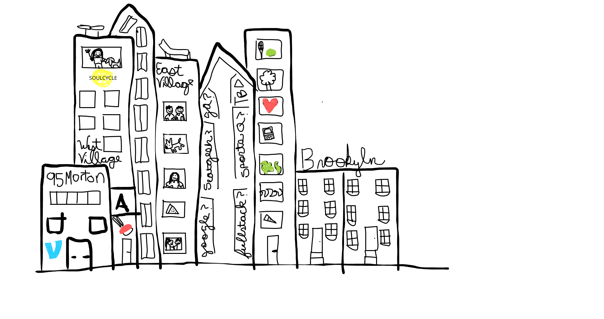
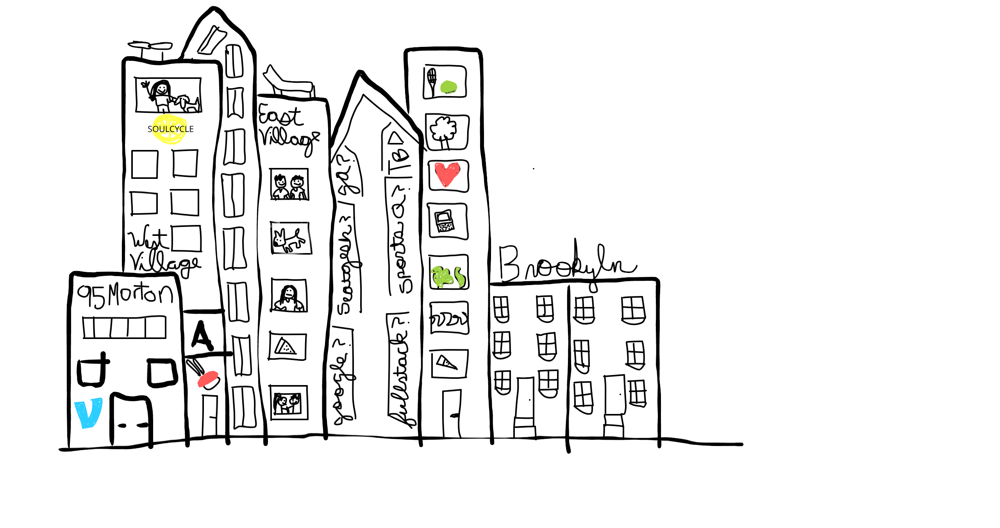
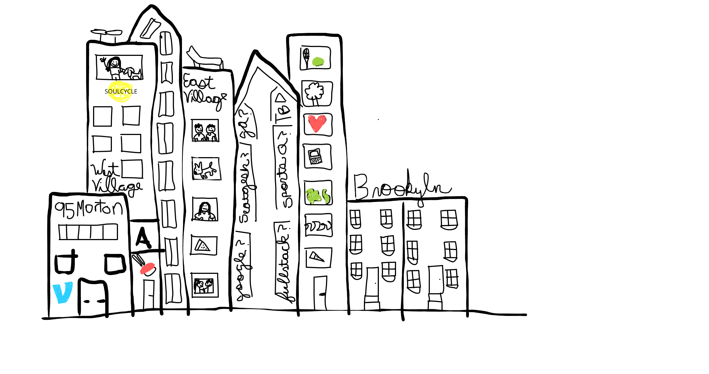
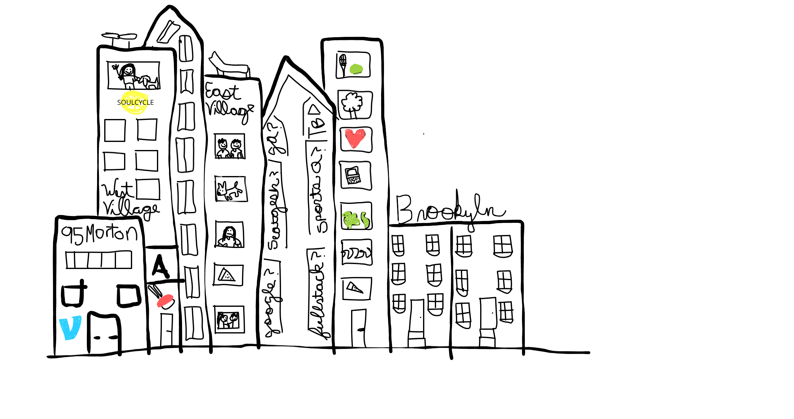

I'm aware that NYC will have annoying things about living there. I've compiled a definitive "Cons List" of the evidence against moving there below:


Give me your tired, your poor, Your huddled masses yearning to breathe free, The wretched refuse of your teeming shore. Send these, the homeless, tempest-tossed to me, I lift my lamp beside the golden door!
Like the words of Emma Lazarus inscribed on the Statue of Liberty in New York Harbor indicate, New York City is a beacon of hope to those looking for a new life and new opportunity. A life in New York is one I and so many people have been dreaming about for a majority of my life. Below are the reasons I've come up with on my "Pros List"

Chicago has been an amazing experience and I've spent six wonderful years here. I want to move to NYC to live outside of the midwest for the first time in my life and to try out a few of the following things:
Chicago holds too many memories to count with friends I couldn't describe without using 100 cliche's
Have you moved to NYC? Should I make the leap? Want to convince me Chicago is the place to stay? Tweet me, email me, get in touch and let me know your advice!